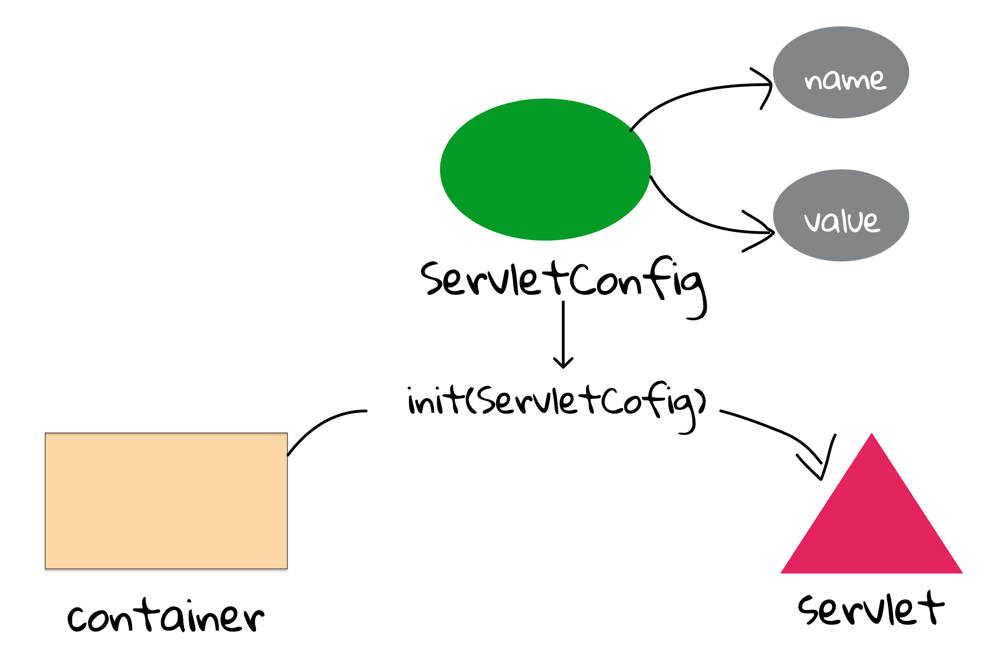
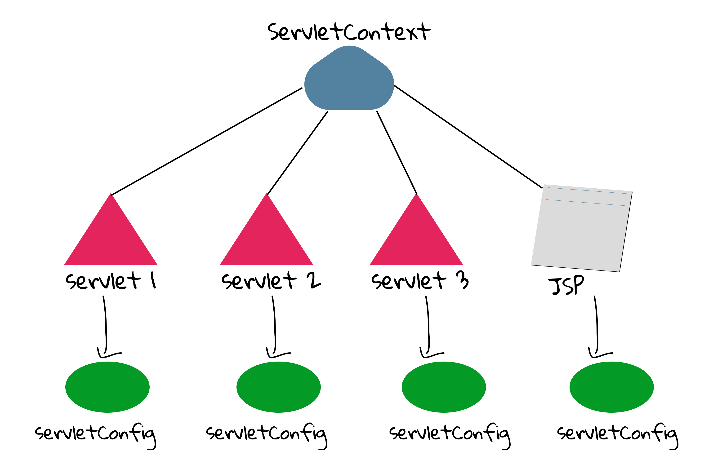

4.1 Init parameters
When starting an application, we always hope that it is flexible enough to change some configurations if necessary. It can be database's connection information[1], the contact email address, the file path. For example, in HelloServlet.java, we would like to output a welcome message to users on the web page. What if we want to output "Hello and Happy New Year" on new year's eve?
public void init() {
message = "Hello World!";
}
Changing the Java code? We will introduce a better way to solve this problem.
Introduction
First of all, we have to keep an important rule in mind: Never hard code if possible. In the code above, the string literal is hard coded, so it is impossible for us to change it without changing code and recompiling[2]. Generally, we have two solutions:
- Design a program to check the date of the day. Its main idea is very straightforward:
if (is_new_year) { message = "Hello and Happy New Year" ;}. But the limitation of this method is that we have to code all logic in advance. What if you want to change it to "Hello, and Happy New Year" after the code is compiled and packaged? So, a more flexible method is required. - Write those configurations in external files[3], including databases. As we can see, this method has the highest flexibility.
In computing, configuration files (commonly known simply as config files) are files used to configure the parameters and initial settings for some computer programs.
Of course, we can use any kind of config files in Java EE, but Java EE provides built-in supports in DD (i.e., web.xml)[4], and it can alleviate our programming labour greatly.
Therefore, by convention, web configurations, including init parameters should be put in DD.
Servlet init parameters
Recall the static file serving example in Section 3.6. A folder called /Users/zhongpu/Desktop/foo on MacOS or C:\Users\zhongpu Desktop\foo on Windows, or /home/zhongpu/Desktop/foo on Linux is the root of these static files. We would like to consider this path as a parameter in config files, so we can change it by modifying only the web.xml file, without having to touch the servlet source code.
We use the <init-param> nested in <servlet> to set name-value pairs for init parameters. Note that both name and value must be String.
<servlet>
<servlet-name>InitServlet</servlet-name>
<servlet-class>com.swufe.javaee.init.InitServlet</servlet-class>
<init-param>
<param-name>path</param-name>
<param-value>/Users/zhongpu/Desktop/foo</param-value>
</init-param>
</servlet>
<servlet-mapping>
<servlet-name>InitServlet</servlet-name>
<url-pattern>/init</url-pattern>
</servlet-mapping>
And in InitServlet.java, we are able to get the value given a name, and the complete code can found at ch4/init.
String path = getInitParameter("path");
In the code of DD above, we put all configurations including URL mappings inside the web.xml. Can we still use annotations? Yes, we can (see Init2Servlet.java).
@WebServlet(name = "Init2Servlet", value = "/init2", initParams = {
@WebInitParam(name = "path", value = "C:\\Users\\zhongpu\\Desktop\\foo")
})
Which style of init parameters should we use? It is actually is trade-off. DD style prefers flexibility in code maintenance as you do not have to touch the code, while annotation style prefer flexibility in code writing as it is more concise. As a matter of fact, we can even achieve a balance by using annotations for URL mappings while using DD for init parameters. Readers can try out this new approach.
The servlet init parameters are read only once (when the container initializes the servlet). Recall the lifecycle of a servlet, init() is called during initialization. In fact, init() wraps another method init(ServletConfig). So, what is ServletConfig? Every servlet has a servlet configuration object:
A servlet configuration object used by a servlet container to pass information to a servlet during initialization.
This is the whole story of the init parameters[5]:
- Step 1: Container reads the Deployment Descriptor for this servlet, including
<init-param>. - Step 2: Container crates a new
ServletConfiginstance of this servlet. - Step 3: Container gives the
ServletConfigreferences to the name/value init parameters[6]. - Step 4: Container creates a new instance of the servlet.
- Step 5: Container calls the servlet
init(ServletConfig)method, passing in the reference to theServletConfig.

As a result, getInitParameter() is a shorthand of getServletConfig().getInitParameter().
By the way, since the container would read the init parameters only once, how to make the modification visible in the runtime? You can redeploy this web application, but taking your web application down is not a wise solution. Therefore, most of the production-quality Web Containers let you do a hot redeploy, which means that you don’t have to restart your server or take any other web apps down. However, redeploying a web application just because the init parameter value changed can be a bad idea. If the value of your init parameters are going to change frequently, you're better off having your servlet methods get the value from a file or database. Remember: No code is panacea.. Init parameters are designed to provide you some extent of flexibility, and trade-off should be always considered when programming.
Context init parameters
The init parameters above are scoped to a single servlet, but sometimes we would like those parameters to be visible throughout the whole application. The code is very similar to the one above.
We use <context-param> in DD. Context is the application runtime where the servlet is running.
<context-param>
<param-name>path</param-name>
<param-value>/home/zhongpu/Desktop/foo</param-value>
</context-param>
As shown in Fig 4.2, ServletConfig is one per servlet, but ServletContext is one per web application[7]. Therefore, if you would like to share something globally, ServletContext is your own choice. By the way, you can think of init parameters as deploy-time constants: you can get them at runtime, but you cannot set them. There is no setInitParameter()!
String path = getServletContext().getInitParameter("path");

In fact, ServletContext can be confusing, and a better name of it would be ApplicationContext. But the reality is the designers of Java EE used the confusing name; we have to tolerant it. So, we would simply call it context.
[1] Like URL, it includes hostname, port, username, password, database name.
[2] This problem is less severe in script languages (e.g., Ruby and Python).
[3] There are many types of configuration files in different computing environments, such as properties, ini, rc, and simple key–value (i.e., name-value) pair format is very common.
[4] If we use our customized config files, we have to handle the write/read issues by our own.
[5] When using annotations, the process is similar.
[6] In Java, "an object A has B" means "A has a reference of B".
[7] JSP is also a servlet in runtime, so it also has a ServletConfig.